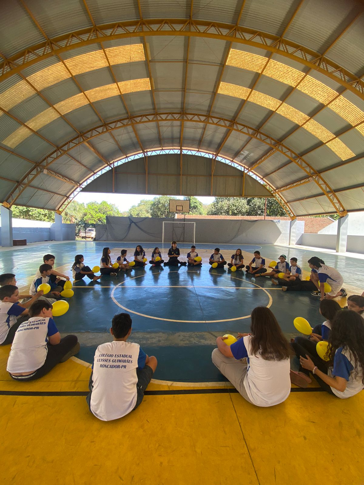
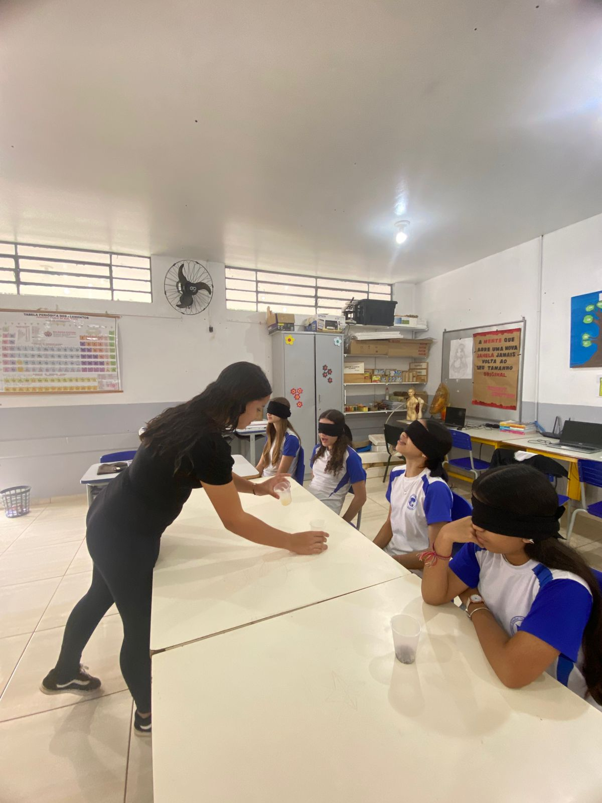
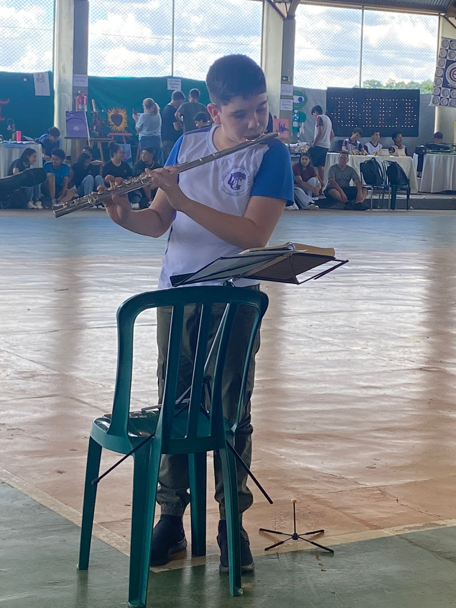
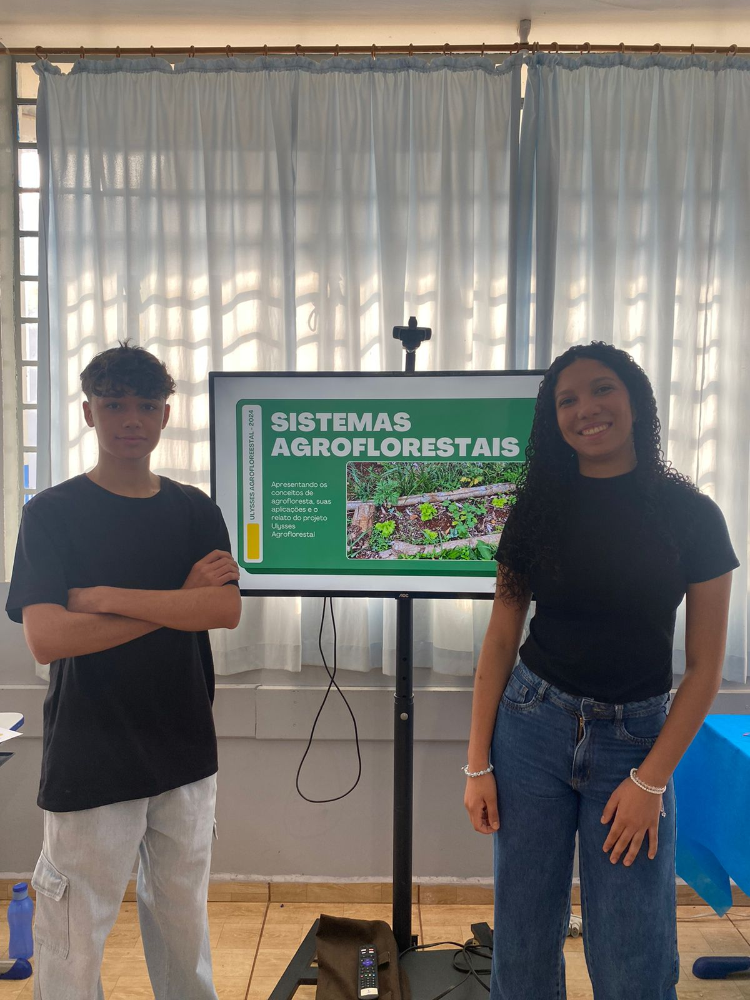
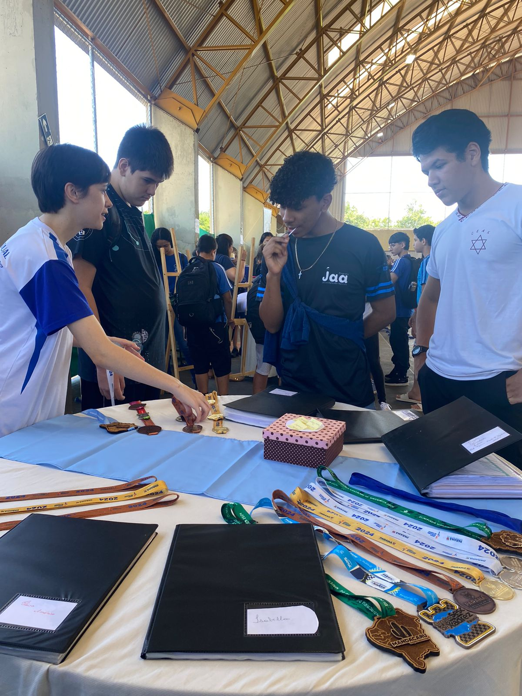
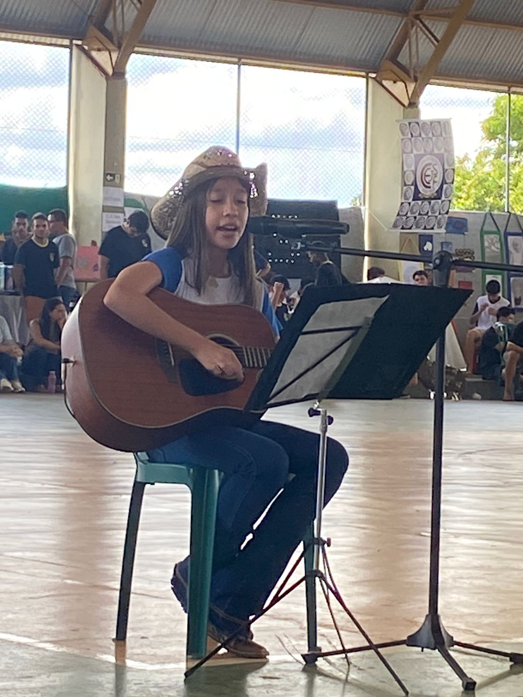
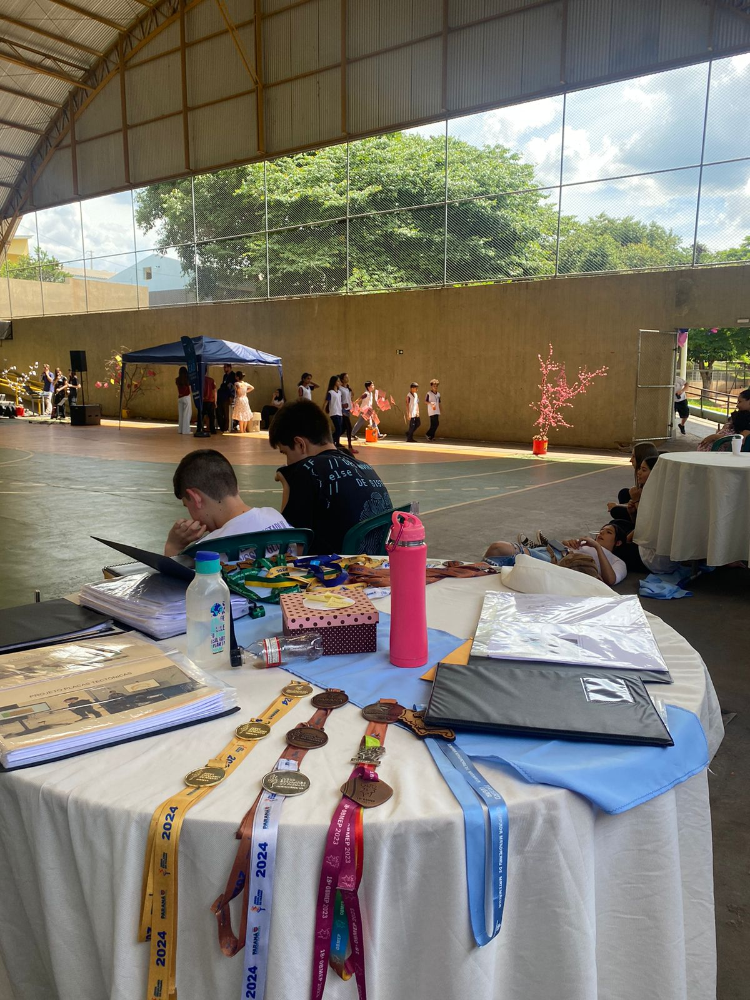
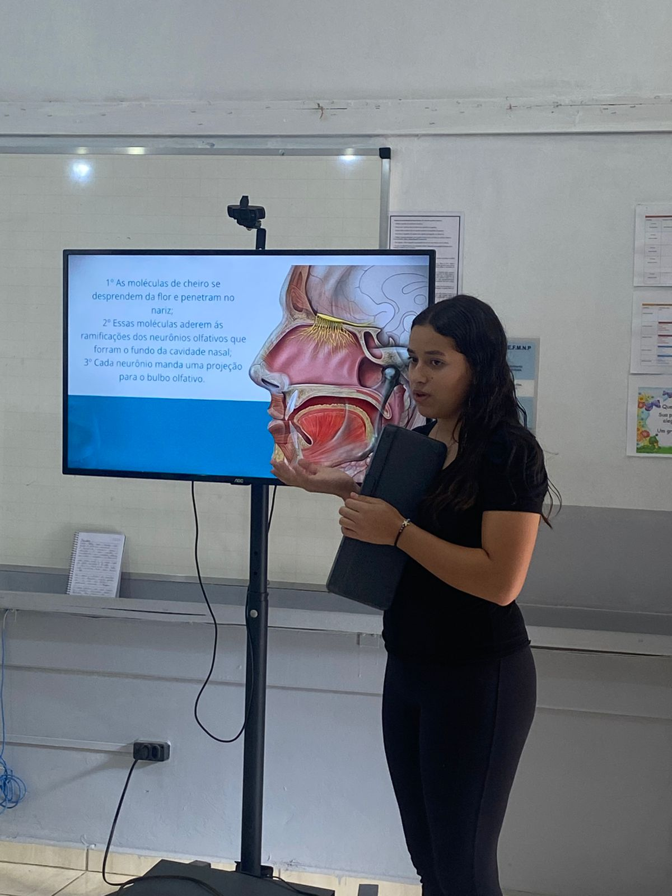

A SALA DE ALTAS HABILIDADES ATUA NO PERÍODO VESPERTINO, COMO UMA SALA DE RECURSOS PARA ALUNOS COM SUPERDOTAÇÃO/ALTAS HABILIDADES

Dinamica com balões com temática do setembro amarelo feita pela aluna Elaíssa

Dinamica do sistema sensorial feito pela aluna Maria Clara

Apresentação musical do aluno Ruan na terceira feira de altas habilidades

Apresentação sobre o sistema agoroflorestal pelos alunos Murilo e Ana Julia

Socialização de trabalhos em Iretama na terceira feira de altas habilidades

Apresentação musical da aluna Yasmin na terceira feira de altas habilidades

Exposição de medalhas dos alunos da Sala de Alta Habilidades

Apresentação da aluna Maria Clara sobre o sistema sensorial e o contato com o meio através dos sentidos